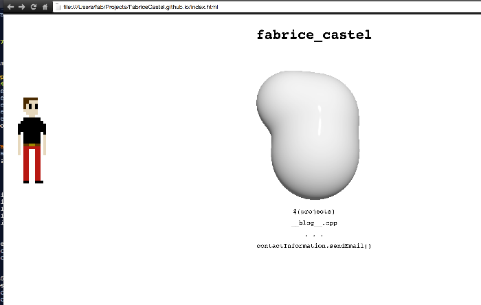
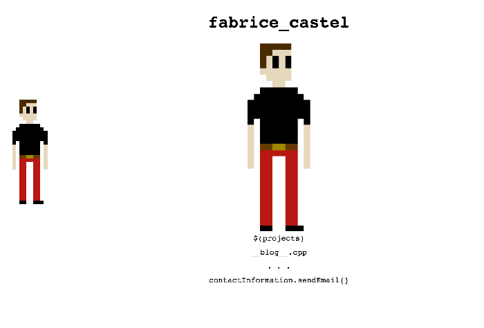
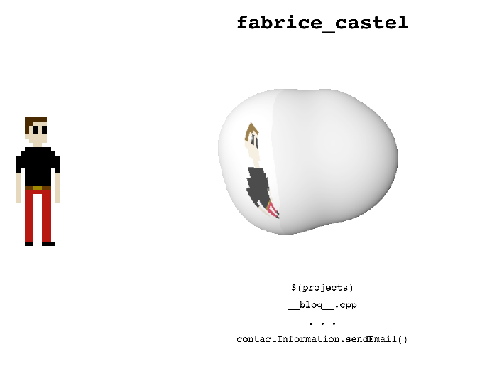

I've spent a good part of my weekend working on this website and I'm now trying to finish up the landing page. At this point I've created a character sprite and white blob animation running on a sphere-tracing algorithm inside of a WebGL fragment shader (fun times). The idea is to make the character walk over to the blob and have the blob show his reflection. This is where I'm at:
The next step I'll be taking is the one that's likeliest to fail; (if you're going to fail, do it fast so you can move on to the next thing!) getting the character reflection up and running. For this I'll be using environment mapping along with a uniform variable in my WebGL shader to keep track of the character's state (distance from the blob, which frame of the walking/standing animation is currently displayed...). I'll also need to pass the various sprites into the shader so the shader knows what it's meant to be reflecting.
Let's start with loading the textures into the shader. First, we'll declare a new variable uniform sampler2D u_image in the fragment shader. I got this from a lot of example code and can't honestly say how or why this works. It seems to me that the underlying framework "knows" this variable name is supposed to be bound to the texture. If anyone can shed some light on how this works, feel free to shoot me an email about it.
(5 hours later...)
It turns out getting a texture into my shader was far more painful than expected. The core issue had to do with Image.onLoad callbacks acting like a bunch of fools and WebGL freaking out about the texture being invalid. In the end I resorted to encoding the image in base64 to embed it directly in the page, bypassing these issues. I would generally advise against this as it might make your page's load times skyrocket, but in this case the texture is a single 32x32 image so it gets a pass. ALRIGHT THEN, here's the glorious texture loaded up and displayed in the GL canvas.
Here's the code I wound up with:
function webGLStart() {
var canvas = document.getElementById("canvas");
initGL(canvas);
initShaders();
initBuffers();
gl.clearColor(0.0, 0.0, 0.0, 1.0);
gl.enable(gl.DEPTH_TEST);
texture = gl.createTexture();
image = new Image();
image.src = "data:image/png;base64,iVB [...] YII=";
gl.bindTexture(gl.TEXTURE_2D, texture);
gl.texParameteri(gl.TEXTURE_2D, gl.TEXTURE_WRAP_S, gl.CLAMP_TO_EDGE);
gl.texParameteri(gl.TEXTURE_2D, gl.TEXTURE_WRAP_T, gl.CLAMP_TO_EDGE);
gl.texParameteri(gl.TEXTURE_2D, gl.TEXTURE_MIN_FILTER, gl.NEAREST);
gl.texParameteri(gl.TEXTURE_2D, gl.TEXTURE_MAG_FILTER, gl.NEAREST);
gl.texImage2D(gl.TEXTURE_2D, 0, gl.RGBA, gl.RGBA, gl.UNSIGNED_BYTE, image);
drawScene();
}Good good, making progress. This is taking longer than expected, thankfully I'm in no rush. Next up is adding reflective rays in the fragment shader sphere tracer code. The easiest way of implementing this is to use the R=I-2N(N⋅I) formula. Here, R is the ray reflecting off the surface that we want to calculate, I is the incident ray (the ray that goes from the camera to the surface) and N is the surface normal. This function is already provided to us via the reflect(I, N) API in GLSL.
Now, we want the reflection to only come from the left side of the blob. We'll assume the rest of the environment reflects pure white. In order to do this, we'll determine the plane-ray intersection between the reflected ray and the x=-200 plane, then map some range of coordinates on that plane to the texture. The code to find such an intersection looks a little something like this:
float intersectReflectionPlane(vec3 p, vec3 ray){
// dot the plane normal with the ray direction
float denom = dot(ray, vec3(1.0, 0.0, 0.0));
if(abs(denom) > EPSILON){
float t = (-dot(p, vec3(1.0, 0.0, 0.0)) - 100.0) / denom;
return t;
}
return -1.0;
}Here I'm returning a t value for the intersection test, meaning you need to add the reflected ray t times to the intersection point p in order to hit the x=-100 plane. Now my shader code for valid surface intersections looks like this:
vec3 refRay = reflect(normalize(inter - pixel), sNormal(inter));
float t = intersectReflectionPlane(inter, refRay);
if(t > 0.0){
vec3 refProj = inter + t*refRay;
vec2 refUV = vec2(-refProj[2], -refProj[1]) / 500.0;
if(abs(refUV[0]) <= 1.0 && abs(refUV[1]) <= 1.0)
baseMaterial = texture2D(u_image, refUV+vec2(0.5, 0.5) / 2.0).rgb;
}
gl_FragColor = vec4(pow(blinnPhongShade(pixel + d*ray, camPos), vec3(1.0/2.2)), 1.0);
And with these latest changes this is all starting to come together! There's clearly a few issues to address here. For starters, the reflected colours don't take into account the reflection angle; in order to make this more physically accurate we will have to account for this with Fresnel Equations. Then there's the character's distance that remains unaccounted for, irritating aliasing artifacts, the ability to apply different textures for each animation frame, getting rid of the white square around the character's reflection... TL;DR there's still a lot to do, but I'm happy with the way this is turning out! :)
I'll come back to this to give it another round of polish when I've got some time on my hands.